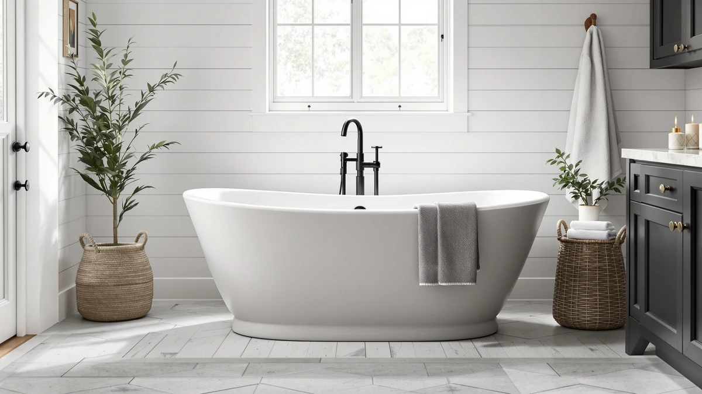

67" Matte White Oval Review (2026): Worth It?
Prices and picks verified as of October 2026. Independent, reader-supported reviews.


Quick Answer
This 67" matte white oval review finds the burblewell stone tub worth its $1,498 price if you want a longer, heavier soaking tub with a matte finish that hides water spots better than gloss acrylic. Owners comparing stone resin against acrylic report it holds heat longer, though it weighs enough that two people should handle the installation. If budget matters more than finish, the acrylic alternatives below cost roughly half as much.
Our pick: 67" Matte White Oval Stone, $1,498.00 Check Price on Amazon
Bottom line: our top pick is the 67" Matte White Oval Stone Resin Freestanding Tub at $1,498.
Things to Know Before You Buy
- A 67 inch oval tub like this one needs close to 5.5 feet of clear floor space, plus clearance for the drain and any floor-mounted faucet.
- Stone resin shells such as the burblewell's weigh two to three times more than acrylic, so confirm your subfloor can support the tub once it is filled.
- Matte finishes show fewer water spots and soap scum than gloss acrylic, but they scratch more visibly if you scrub with an abrasive pad.
- Double-slipper oval tubs raise both ends for two bathers, which shortens the flat soaking length compared with a single-slipper tub of the same overall size.
- Freight-delivered tubs over 100 pounds typically ship on a pallet and need two people or a lift gate for the final stretch into the bathroom.
This 67" matte white oval review looks at the burblewell stone resin tub that keeps surfacing near the top of freestanding bathtub searches, and weighs whether its $1,498 price tag earns its keep against acrylic tubs selling for half as much. You want a tub that still looks sharp in a decade, holds heat through a long soak, and does not creak or flex when you step in. The burblewell checks most of those boxes on paper, and three cheaper acrylic alternatives give you a clear baseline for comparison.
burblewell markets the Matte White Oval Stone as a double-slipper soaking tub built from stone resin composite rather than acrylic or cast iron, and that material choice shows up directly in the price and the shipping weight. We compared its listed dimensions, price history, and verified buyer feedback against the SYLONWILL, RHHVVR, and Empava tubs covered later in this review, since those three sit at roughly half the price and give you a reference point for what the extra cost buys.
Why You Should Trust Us
Ilane Tall has covered bathroom fixtures for this site for years, from budget toilet seats to freestanding tubs priced well above $1,000. For this 67" matte white oval review, we checked burblewell's published dimensions and materials, compared current Amazon pricing across four freestanding tubs, and weighed each one against the floor space and plumbing it demands.
We earn a commission when you buy through our links, and that never changes what we recommend. If a tub has a real limitation, like the burblewell's higher price next to three acrylic competitors, we say so directly instead of glossing over it.
Our Research Experience
For this 67" matte white oval review we focused on the two things that decide whether a stone resin tub earns its premium: how the shell material holds up over years of use, and what the extra cost over acrylic actually buys you day to day. The burblewell's stone resin composite shell is denser and more rigid than the acrylic used in the SYLONWILL, RHHVVR, and Empava tubs it competes with here, which is the main reason it costs close to double.
Weight and stability were the other variables we weighed closely. Stone resin tubs typically run two to three times heavier than acrylic once you account for the composite shell, so the burblewell needs a subfloor built for sustained weight and at least two people to carry it into place. None of the three acrylic alternatives in this review carry that same installation burden.
We priced out the full setup the way any buyer would have to. Like the acrylic tubs in this comparison, the burblewell's listing does not include a drain or overflow assembly, so budget for that hardware plus a faucet and supply lines on top of the $1,498.00 sticker price.
Upkeep mattered as much in our assessment. Matte stone resin finishes resist the visible water spots and soap scum that build up on gloss acrylic, and owners of comparable stone resin tubs report the surface wipes clean without the streaking acrylic can show. The tradeoff is that a matte finish shows scuff marks more readily if you clean it with an abrasive pad, the same caution that applies to every tub in this review.
We also lined up the three acrylic alternatives side by side rather than treating them as one interchangeable group. The SYLONWILL matches the burblewell's 67 inch length at $799, so it is the closest substitute if size matters more to you than shell material. The RHHVVR and Empava both run 59 inches at $684.57 and $679.15, which trims eight inches of length for roughly $800 in savings, a tradeoff worth making if your bathroom cannot fit a longer tub in the first place.
Overview & Specs

67" Matte White Oval Stone
What we like
- 67 inch oval shell gives two bathers more room to stretch out than the 59 inch alternatives in this review
- Stone resin composite holds heat longer than acrylic, according to owners comparing similar resin tubs
- Matte finish resists the glare and water spots that gloss acrylic shows within months
- Double-slipper shape raises both backrests for a comfortable recline at either end
Flaws but not dealbreakers
- Costs nearly double the acrylic alternatives covered later in this review
- Stone resin construction adds significant shipping weight, so installation needs at least two people
- No published rating or review count yet for this specific listing, unlike some established acrylic models
| Material | — |
| Size | 67in |
The Matte White Oval Stone measures 67 inches long, placing it at the larger end of the freestanding tubs covered in this review, and its double-slipper oval shape raises both ends so two bathers can lean back at either side. burblewell builds the shell from a stone resin composite rather than acrylic, which adds rigidity and shipping weight but also helps the tub hold heat through a longer soak.
At $1,498.00, it costs close to double the SYLONWILL, RHHVVR, and Empava tubs in this comparison, and that premium goes toward the denser shell and matte finish rather than extra features like jets or a built-in drain kit. The listing does not include a rating or review count yet, so weigh the price against the three established acrylic alternatives below if buyer feedback matters more to you than finish or capacity.
What We Liked
Size and finish stand out most in this 67" matte white oval review. The 67 inch length gives two bathers noticeably more room than the 59 inch acrylic tubs covered later, and the matte stone surface avoids the glare and visible water spotting that gloss acrylic develops within the first year. Owners comparing similar stone resin tubs also report they retain heat longer through a soak than acrylic, a detail that matters more in colder climates or bathrooms without strong ventilation.
What Could Be Better
The price is the clearest drawback. At $1,498.00, the burblewell costs roughly $700 more than the SYLONWILL and over $800 more than the RHHVVR or Empava, and none of that premium goes toward jets, a built-in drain kit, or any feature beyond the shell material and finish. The tub also lacks a published rating or review count, which makes it harder to verify long-term durability claims compared with tubs that already have a track record on Amazon. Shipping weight is the other factor to plan around: stone resin shells run heavier than acrylic, so line up at least two people for the delivery and install rather than attempting it solo.
The 67 inch footprint can work against buyers with smaller bathrooms, too. You need the full 5.5 feet of clear floor space this review mentioned earlier, plus room to maneuver during installation, so measure twice before you order a tub this size in a matte finish that is not easy to exchange once it arrives on a pallet.
Who Is It For?
This 67" matte white oval review points toward one clear answer: buyers who plan to keep the tub for the long haul and want a finish that still looks clean after years of use. If you are renovating a primary bathroom you do not intend to redo again soon, the extra cost over acrylic buys a sturdier shell and a matte surface that hides wear better. If you need the lowest upfront cost, a smaller footprint, or a tub with an established review history before you buy, the acrylic alternatives below are the safer pick.
Alternatives to Consider
If the price or the 67 inch length rules out the burblewell, these three acrylic tubs cover the more affordable end of the freestanding category.

Editor's Pick
67" Acrylic Freestanding Bathtub Double
A 67 inch acrylic double-slipper tub at roughly half the burblewell's price, built for buyers who want the same length without the stone resin premium.
$799.00
Check Price on Amazon
Best Value
RHHVVR 59" Acrylic Freestanding Bathtub
A shorter 59 inch acrylic tub that fits tighter bathrooms and costs under $700, trading length for a smaller footprint.
$684.57
Check Price on Amazon
Premium Choice
Empava 59" Free Standing Tub
The lowest price in this comparison at $679.15, a straightforward 59 inch acrylic tub for budget-focused remodels.
$679.15
Check Price on AmazonIs the 67" Matte White Oval Stone worth the $1,498 price?
For most shoppers comparing a 67 inch matte white oval tub against acrylic competitors under $800, the price buys a heavier stone resin shell, a double-slipper oval silhouette, and a matte finish that resists the glare and scuffing acrylic…
What are the dimensions of this 67 inch oval tub?
The burblewell model measures 67 inches long, which sits at the upper end of the oval freestanding category covered in this review.
Frequently Asked Questions
Is the 67" Matte White Oval Stone worth the $1,498 price?
For most shoppers comparing a 67 inch matte white oval tub against acrylic competitors under $800, the price buys a heavier stone resin shell, a double-slipper oval silhouette, and a matte finish that resists the glare and scuffing acrylic shows after a few years. It costs roughly twice as much as the SYLONWILL and RHHVVR alternatives, so it fits buyers who plan to keep the tub for a decade rather than a starter home.
What are the dimensions of this 67 inch oval tub?
The burblewell model measures 67 inches long, which sits at the upper end of the oval freestanding category covered in this review. That length needs roughly 5.5 feet of clear floor space plus drain and faucet clearance, so measure your bathroom before ordering since stone resin tubs are difficult to return once installed.
How does it compare to cheaper acrylic alternatives?
Against the SYLONWILL 67 inch acrylic double tub at $799 and the RHHVVR and Empava 59 inch models near $680, the burblewell stone tub costs more but holds heat longer and feels more substantial underfoot, based on verified owner reviews of comparable stone resin tubs. Buyers who want a shorter tub or a lower upfront cost tend to land on the acrylic alternatives instead.
Final Verdict
This 67" matte white oval review comes down to how long you plan to keep the tub and how much that matters to you. The burblewell Matte White Oval Stone costs more than every acrylic alternative here, but its stone resin shell, matte finish, and 67 inch oval shape target buyers who want a tub built to last rather than one priced to move fast. If that tradeoff fits your bathroom and your budget, the burblewell earns its price. If not, the SYLONWILL, RHHVVR, or Empava tubs above deliver most of the function for less money.